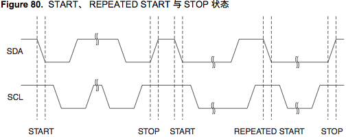
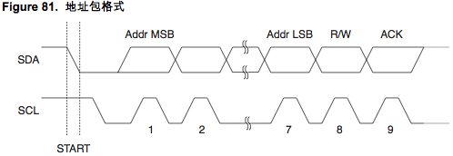
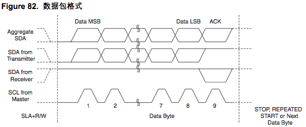
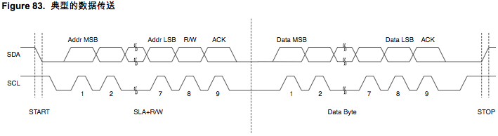

| 作者: | gashero |
|---|---|
| 日期: | 2012-11-08 |
目录
AVR的TWI就是I2C，兼容的，为了避免付专利费而已。这玩意是真正的总线，而且在已有器件中应用十分广泛。
先行研究ATmega48的TWI实现。
参考文献：
[i] ATmega48-88-168(V).pdf：184-212，还没看的部分
- 多主机总线系统，仲裁与同步 page 187
- TWI模块概述 page 189
- TWI寄存器说明 page 191
- 使用TWI page 194
- 发送模式 page 197
- 多主机系统与仲裁 page 211-212
SCL位高电平时，SDA上的电平有效，此期间SDA上的电平必须保持稳定。因为上升沿和下降沿还有另外的意义。
START与STOP信号之间需要假定总线忙，其他主机不允许控制总线。可以在一次发送完成后不发STOP，而再发一个START信号，这叫REPEAT START，这会不放弃总线的控制权而继续发送。
当SCL位高时的下降沿表示START，上升沿表示STOP。时序图如下：
地址包 位9bit，包括7bit地址位、1bit读写(READ/WRITE)控制位，1bit应答位(ACK)。如果READ/WRITE=1表示READ(SLA+R)，否则位WRITE(SLA+W)。从机被寻址时，必须在第9个SCL周期拉低SDA来做出应答。如果主机没有收到ACK，则主机应该发出STOP，表明没有寻址到从机，放弃总线控制权。或REPEAT START继续寻址。
地址的MSB先发送，从机地址0000000作为广播地址保留，其他地址可以由设计者定制。
广播呼叫时，所有从机都应该在ACK周期拉低SDA做出应答。广播对WRITE有意义，对READ则没有啥意义的。因为如果所有从机都发送数据就乱了。
所有形如1111xxx的地址都保留。
地址包格式：
实际数据负载为9bit，其中8bit数据和1bit的应答。主机负责产生时钟和START/STOP状态，接收器响应。应答时由从机在第9个SCL周期拉低SDA实现的。如果接收器使SDA为高，则算作NACK信号。当接收器完成接收，或者无法接收更多数据，应该在收到最后的字节后发出NACK来告知发送器。数据的MSB首先发送。
数据包格式：
只有START和STOP的包是非法的。从机可以通过拉低SCL电平来使发送者延迟发送。这种行为不会影响SCL高电平时间，因为SCL高电平是由主机控制的。改变SCL占空比就可以降低TWI数据传送速度。
典型的数据传送：
两根数据线是SDA和SCL，地线当然也是需要的。
概念：
一个整体的8bit寄存器，作为比特率发生器的分频因子。主机模式下产生SCL时钟频率。
SCL_freq= CPU时钟频率/(16+2*(TWBR)*4^TWPS)
使能TWI、启动主机访问、产生接收器应答、产生STOP状态、写入TWDR寄存器时控制总线暂停等。
[7:TWINT:R/W:0]：TWI中断标志，表示需要中断了，若SREG的I和TWCR的TWIE都置位，则MCU产生TWI中断。TWINT置位时，SCL的低电平被延长。TWINT标志的清零需要靠写1来完成，执行中断时硬件不会自动将其改为为0。一旦被清零则TWI立即开始工作，因此要在清零前完成对TWAR、TWSR、TWDR的访问。
[6:TWEA:R/W:0]：使能TWI应答，控制应答脉冲的产生，若置位，则如下条件时产生ACK：
- 器件的从机地址与主机的请求相符合
- TWAR的TWGCE置位时接收到广播呼叫
- 在主机/从机模式下接收到一个字节的数据
将TWEA清零可以使器件暂时脱离总线，置位后重新恢复地址识别。
[5:TWSTA:R/W:0]：START状态标志，当CPU希望成为主机时对此置位。不定何时才能成为主机。发送START后软件必须清零TWSTA。
[4:TWSTO:R/W:0]：主机模式下置位TWSTO则在总线产生STOP状态，然后TWSTO自动清零。从机模式下置位TWSTO则使接口从错误状态恢复到未寻址状态，此时总线不产生STOP信号，但TWI返回一个定义好的未被寻址的从机模式释放SCL和SDA为高阻态。
[3:TWWC:R:0]：TWI写碰撞标志，当TWINT为低时写数据寄存器将置位TWWC，每一次对TWDR的写都将更新此标志。
[2:TWEN:R/W:0]：TWI操作使能，写1时，TWI引脚将I/O引脚切换到SCL与SDA引脚，使能波形斜率限制器与尖峰滤波器。清零则关闭TWI模块。
[1:-:R:0]：保留。
[0:TWIE:R/W:0]：TWI中断使能。
[7-3:TWS7-TWS3:R:1]：这5bit反映TWI逻辑和总线的状态，状态码在后面描述。建议检测该部分值时应该屏蔽低3bit。
[2:-:R:0]：保留，总是0。
[1-0:TWPS1-TWPS0:R/W:0]：TWI预分频位。分频值如下：
| TWPS1:0 | 预分频值 |
| 00 | 1 |
| 01 | 4 |
| 10 | 16 |
| 11 | 64 |
该值在比特率发生器中有用到。
整体的8bit寄存器。
发送模式时，包含了要发送的字节，接收模式时，包含了接收到的数据。
当TWI接口没有进行移位工作(TWINT置位)时此寄存器可写。第一次中断发生前用户不能够初始化数据寄存器。只要TWINT置位，TWDR的数据就是稳定的。在数据移出时，总线上的数据同时移入寄存器。TWDR总是包含总线萨好你个出现的最后一个字节。总线仲裁失败时，主机切换为从机，但总线上的数据不会丢失。ACK的处理由TWI逻辑自动管理，CPU不能直接访问ACK。
该寄存器高7bit为从机地址，当工作于从机模式时，TWI根据此地址响应。主机模式不需要此地址。
[7-1:TWA6-TWA0:R/W:1]：TWI从机地址寄存器，值为本机的从机地址。
[0:TWGCE:R/W:0]：置位后可以识别TWI总线的广播。
[7-1:TWAM6-TWAM0:R/W:0]：从机地址屏蔽位，如果对应位为1则忽略输入地址与TWAR对应位的区别。估计是用于让从机可以匹配一大段地址的。
[0:-:R:0]：保留。
ATmega系列芯片的I2C接口，所用的上拉电阻时可以用芯片内置的上拉电阻的。如果需要负载能力更强的，可以外接10Kohm的上拉电阻。
Raspberry Pi也不需要担心，板子上自带了1.8Kohm的上拉电阻了。
中断名 TWI_vect ，对AVR所有型号都一样。
通过如下初始化函数，至少让RPi有反应了:
void twi_slave_init() {
TWCR = 0x00;
TWBR = 0x07; //设置比特率，0x07=400K，0x34=100K
TWSR = 0x00; //分频比，两者决定400KHz
TWAR = 0xcc; //从机写地址0xcc，读地址0xcd
TWCR= _BV(TWEN)|_BV(TWIE)|_BV(TWEA);
}
RPi发出 i2cdetect -y 0 从usart的返回看，先收到了0x60，然后收到了0x00。而RPi返回则是0x6b到0x77的地址全满。第二次执行该命令AVR没响应，RPi返回所有地址都满了。
0x60代表了TW_SR_SLA_ACK。在对0x00进行错误处理 TWCR= (TWCR & _BV(TWINT))|_BV(TWSTO); 后，反倒是RPi又搜索不到地址了。
这里的关键是在0x60时，通过 TWCR |= _BV(TWEA); 来发送一个ACK。这样就可以被RPi扫描到了。扫描到的地址为0x66。怎么来说0xcc和0x66也对不上阿。0xc2则对应0x61。
尝试用RPi发送数据时，AVR收到了0x60，然后一直是0xa0，表示收到了STOP。看来是我对0x60的处理不对，导致没有后续发送了。
原来用作usart调试的部分耽误了一些i2c信号，导致一些信号没有接到。同时导致RPi一直提示 IOError: [Errno 5] Input/output error 。去掉了所有的usart调试后，一路顺顺当当的接到了数据。同时RPi的出错提示也没有了。即便是将usart提高到115200bps也还是有一定机会出错。
TWCR寄存器中。TWEA是一种状态，表明可以自动响应ACK，而不是一种动作，所以一般不需要手动操作。
每次连接成功可以发送接受多个字节的，但是每次中断是只收一个字节。
状态转移函数:
ISR(TWI_vect) {
uint8_t twi_status;
twi_status=TWSR & 0xf8;
//usart_puthex(twi_status);
switch(twi_status) {
case TW_SR_SLA_ACK: //0x60，收到SLA+W
//自动发送ACK响应了
break;
case TW_SR_STOP: //0xa0，收到STOP
usart_putchar('x');
TWCR |= _BV(TWSTO);
break;
case TW_SR_DATA_ACK: //0x80，收到数据
//此处可读取TWDR了
//usart_puthex(TWDR);
break;
case TW_BUS_ERROR: //0x00，总线错误
default:
TWCR |= _BV(TWSTO);
usart_puthex(twi_status); //看看错误状态码
break;
}
TWCR |= _BV(TWINT)|_BV(TWEN);
}